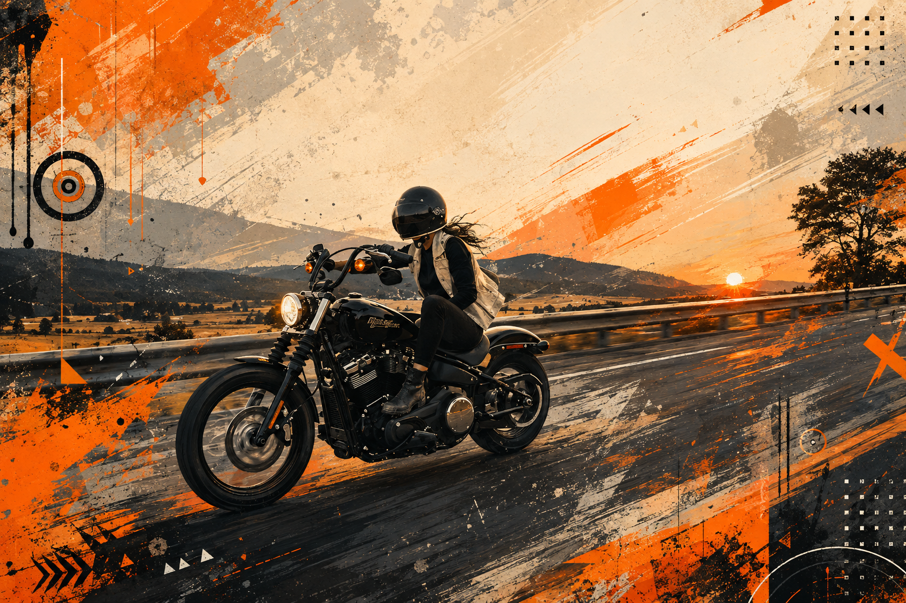

01 · FREEDOM
Pick up deliveries when it suits you.
No fixed shift. No manager calling because you logged off. Go online when you've got time, go offline when you don't.
Your schedule stays yours.
Choose when you ride, see what a delivery pays before you accept it, and turn completed drop-offs into money you can withdraw.
Fidelx is built around the rider, not the other way around. When you're ready, go online. Nearby jobs appear with the pickup, destination and delivery fee. You decide what is worth your time.
Not “be part of the future.” Actual things that change what a delivery shift feels like.
No fixed shift. No manager calling because you logged off. Go online when you've got time, go offline when you don't.
Your schedule stays yours.Pickup, drop-off and delivery fee are shown before you accept. You don't have to guess whether a trip is worth the fuel and time.
No mystery trips.Available jobs are surfaced around where you are, so your day can feel like a chain of purposeful trips instead of random movement across town.
Work closer to where you are.Completed deliveries move into your balance. Once funds clear, withdraw to your bank instead of waiting for a mysterious payday.
Start your rider application →Submit your NIN, basic details and the information needed to keep the rider network trustworthy.
When you're ready to work, switch your availability on. No weekly roster.
See pickup, destination and fee before accepting the delivery.
Complete the handoff, confirm delivery and watch the earnings move toward your available balance.
Sign up, get verified, and go online when you're ready. Fidelx starts in Otukpo — and we're building the rider network one reliable drop at a time.
Become a Fidelx rider →